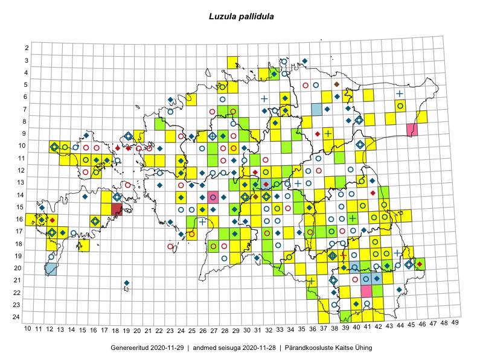

Luzula pallidula
Uuendatud: 2016-12-01
Kaardile koondatud taksonid: Luzula pallidula Kirschner

Kaart põhineb 114 kirjel, neist vaatlusi 109 ja eksemplare 5.
Kuvatud viited 20 esimesele andmebaasikirjele, ülejäänud PlutoFis
- Ott Luuk, Toivo Sepp: 2015-07-29: 09-31: ala
- Toomas Kukk, Eerik Leibak: 2015-07-29: 16-45: ala
- Peedu Saar, Liina Oja: 2015-07-20: 08-44: ala
- Tiit Hallikma, Toomas Kukk: 2015-06-10: 15-30: ala
- Malle Leht: 2015-07-08: : ala
- Toomas Kukk, Tiit Hallikma: 2015-06-10: 15-31: ala
- Toomas Kukk, Tiit Hallikma: 2015-06-12: 12-35: ala
- Tiit Hallikma, Toomas Kukk: 2015-06-11: 10-29: ala
- Thea Kull: 2015-06-14: 10-13: ala
- Ott Luuk, Elle Roosaluste, Jaak-Albert Metsoja: 2015-06-15: 16-16: ala
- Ott Luuk, Elle Roosaluste, Jaak-Albert Metsoja: 2015-06-16: 18-15: ala
- Ott Luuk, Hannes Pehlak: 2015-06-12: 20-35: ala
- Ott Luuk, Hannes Pehlak: 2015-06-11: 17-30: ala
- Thea Kull, Eerik Leibak: 2015-07-06: 14-43: ala
- Jana-Maria Habicht, Ester Valdvee, Kirke Pilvik, Anu Nurk: 2015-07-30: 09-35: ala
- Thea Kull: 2015-06-21: 15-41: ala
- Eeva-Maria Jeletsky, Tarmo Niitla: 2015-06-26: 10-12: ala
- Eeva-Maria Jeletsky, Tarmo Niitla: 2015-06-28: 11-13: ala
- Eeva-Maria Jeletsky, Tarmo Niitla: 2015-06-27: 11-15: ala
- Eeva-Maria Jeletsky, Tarmo Niitla: 2015-06-19: 11-16: ala